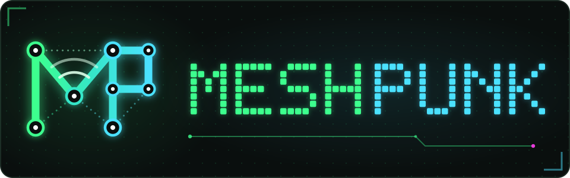
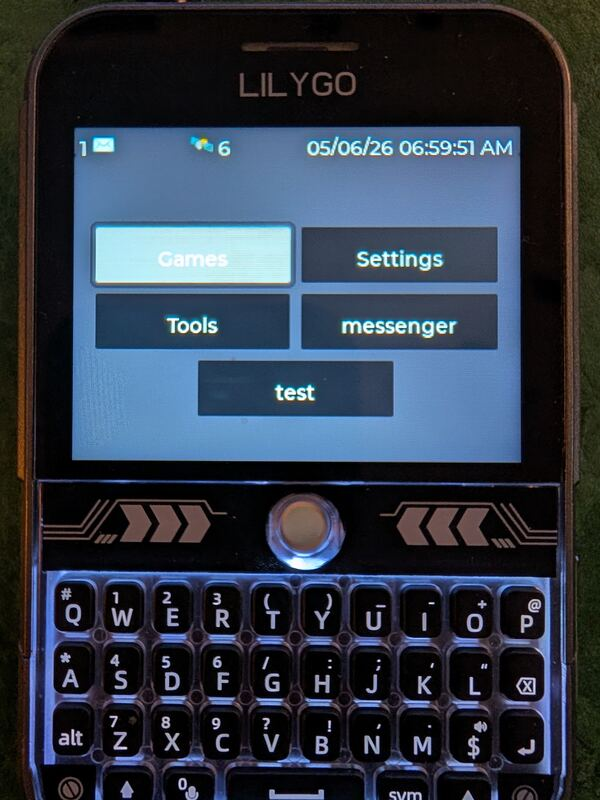
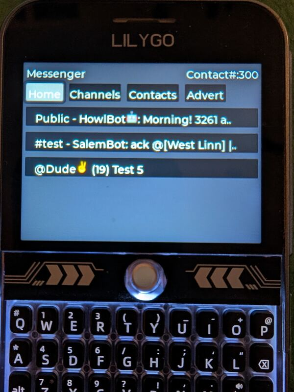
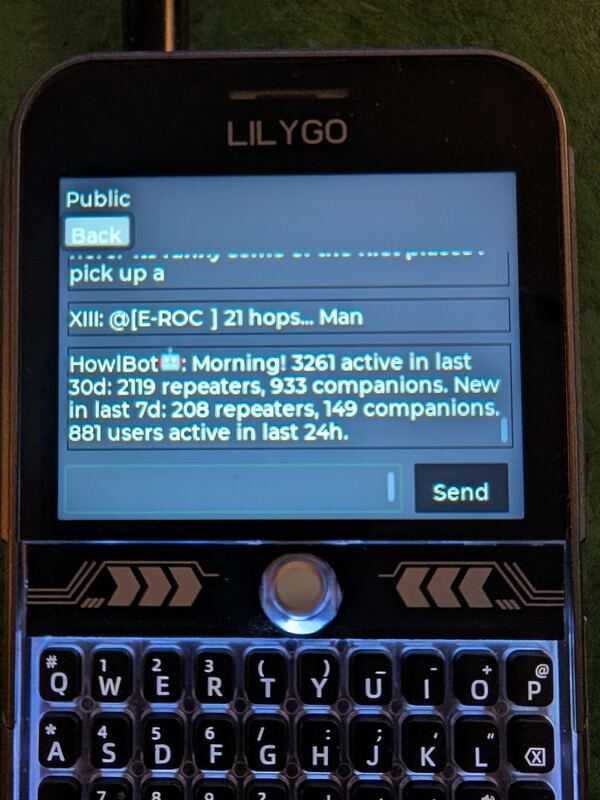
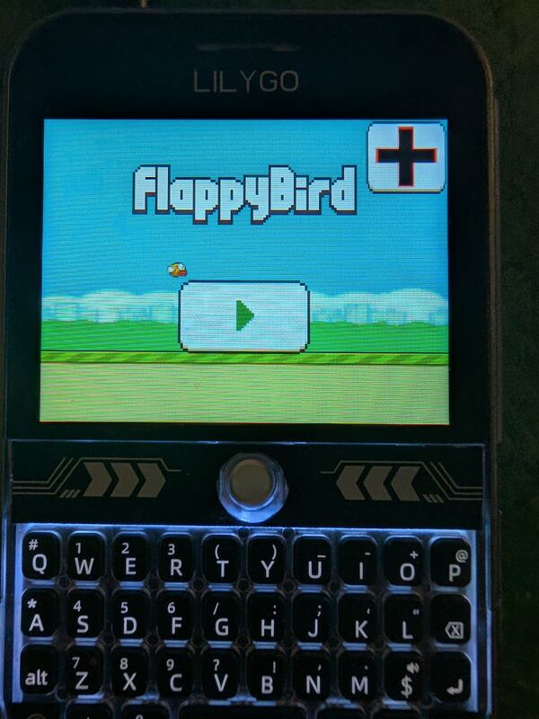
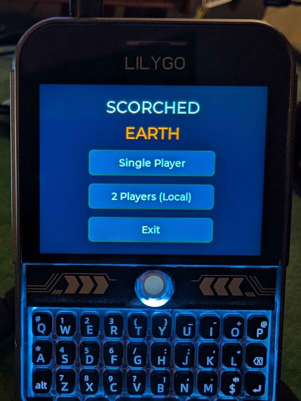
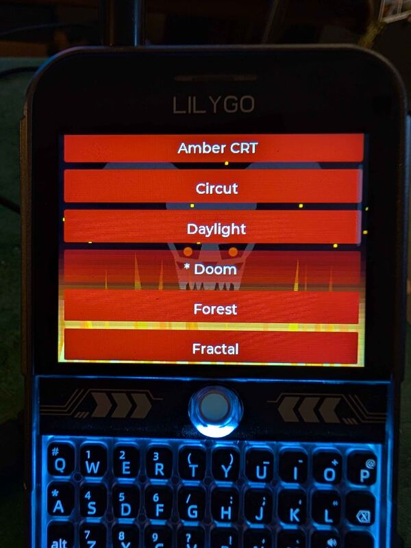
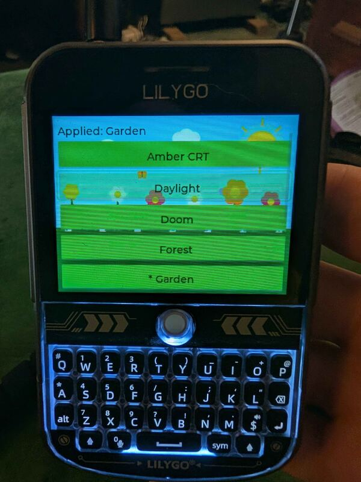
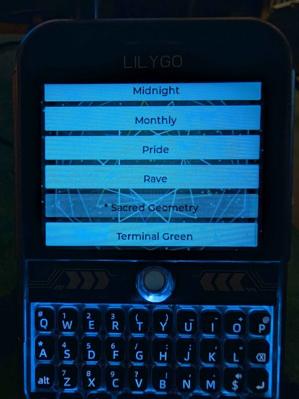

LilyGo T-Deck
Keyboard, trackball and touchscreen.

Mesh messaging, maps, an app library and a shelf of games. The interface is LVGL and the apps are Lua scripts, so the device is yours to change.
Releases are built per device. The flasher asks which one you have.
Keyboard, trackball and touchscreen.
Touchscreen, with an on-screen keyboard and on-screen game pads.
Touchscreen, with an on-screen keyboard and on-screen game pads.
Everything below runs on the device itself. A phone is optional: BLE companion apps work too.
MeshCore comes preinstalled: direct messages, channels, and room server and repeater logins with admin commands, all from the Messenger app.
The LoRa protocol is an installable package. MTLite, a Meshtastic-compatible protocol, installs from the App Library next to MeshCore.
Offline tile caching, message path animations and replay, and sender triangulation.
Install and update apps, themes and protocols over WiFi, straight from GitHub. No reflash needed.
New firmware installs over WiFi or from the SD card under Settings > Firmware. No computer needed after the first install.
Lua scripts on the filesystem show up as apps. Write one, copy it over, and it runs.
Doom, PICO-8, Game Boy with link-cable play, NES, SNES, Neo Geo Pocket, Sega 8-bit and a 386 DOS PC. Bring your own ROMs, WADs and carts.
Plug in a gamepad, keyboard, mouse, thumb drive or USB-C audio adapter.
An MP3 player that keeps playing in the background, themes, a file manager, emoji, and a text-mode web browser from the App Library.
Menus, the Messenger, games and a few of the themes.








A first install takes a USB cable and a desktop browser.